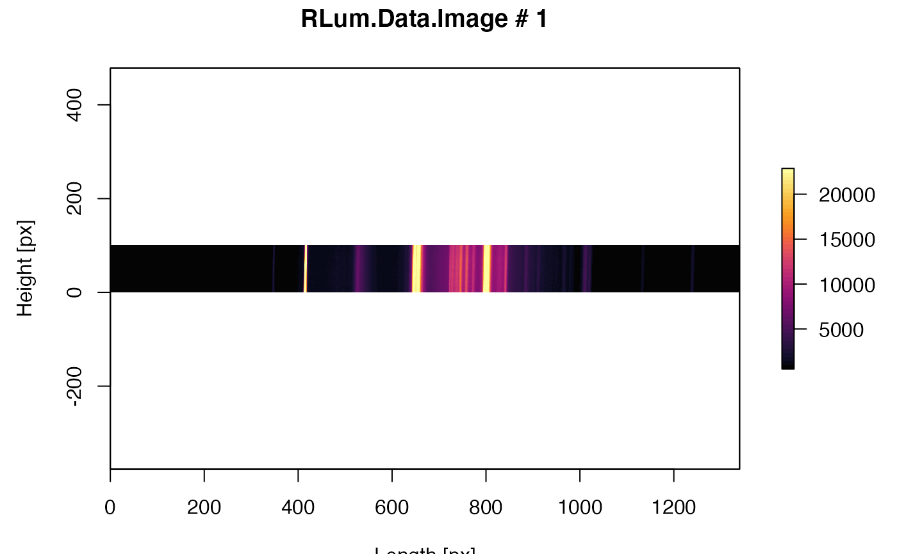

ExampleData.RLum.Data.Image.RdMeasurement of Princton Instruments camera imported with the function read_SPE2R to R to produce an RLum.Data.Image object.
Object of class RLum.Data.Image
ExampleData.RLum.Data.Image
These data were kindly provided by Regina DeWitt.
| Lab.: | |
| Department of Physics, East-Carolina University, NC, USA | |
| Lab-Code: | - |
| Location: | |
| - | |
| Material: | - |
| Reference: | |
| - |
Image data is a measurement of fluorescent ceiling lights with a cooled Princeton Instruments (TM) camera fitted on Risoe DA-20 TL/OSL reader.
0.1
##load data data(ExampleData.RLum.Data.Image, envir = environment()) ##plot data plot_RLum(ExampleData.RLum.Data.Image)